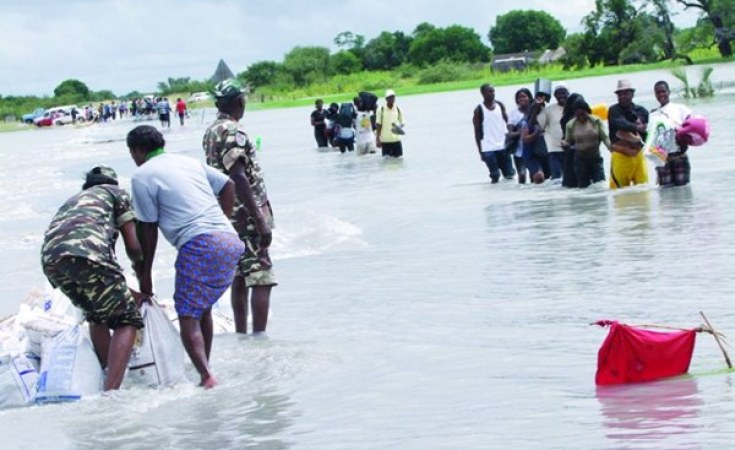

Natural Disasters
Learn how floods, droughts, tornadoes, earthquakes and volcanoes happen, how they affect people and the environment, and what they mean for communities in Namibia and around the world.
Prepared by: Daniel T. Ukelo, Saar SSK Hapulile, Martin T. Shambo and Tuyenikelao N. Neshuku

Welcome, Grade 7 learners
This educational blog uses short explanations, illustrations, a video, discussion questions and a quiz to help you learn about natural disasters in an interactive way.
What will you learn?
Knowledge
Define natural disasters, identify major types and explain how floods, droughts, tornadoes, earthquakes and volcanoes occur.
Understanding
Describe effects on human life and the environment, identify where major disasters occur, and connect the lesson to Namibia.
Five major natural disasters
Flood
Water covers land that is normally dry.
Drought
A long period with much less rainfall than normal.
Tornado
A violently rotating column of air.
Earthquake
Sudden shaking of the Earth's surface.
Volcano
An opening through which magma, ash and gases escape.